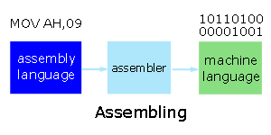

Module A - Introduction
Information
Summarize the low-level features of programming
"Why would you want more than machine language?" (John von Neumann)
Fundamental Units |
Representations |
Addresses |
Instructions |
Exercises
Program information consists of instructions and data.
How is this information stored?
What does a program instruction look like?
How do we make program instructions readable?
Fundamental Units
John von Neumann selected binary (base 2) digits as
the EDVAC's fundamental unit, arguing that elementary operations
are easier to perform in binary. The vast majority of modern
computers process and store information in binary
digits.
We call a binary digit a bit.
A bit is either off or on. We the value 0 for off;
and the value 1 for on.
The fundamental addressable unit of primary memory
is the byte. Typically, one byte consists of
2 nibbles. One nibble consists of
4 consecutive bits
| Byte |
| Nibble |
Nibble |
| Bit |
Bit |
Bit |
Bit |
Bit |
Bit |
Bit |
Bit |
One byte can store any one of 256 (28)
possible values.
00000000 <- possibility 0
00000001 <- possibility 1
00000010 <- possibility 2
00000011 <- possibility 3
00000100 <- possibility 4
...
00111000 <- possibility 104
...
11111111 <- possibility 255
|
Note that we start counting from 0.
The natural unit of the CPU is a word. A word
is the size of the general registers - the unit of
memory within the CPU.
A word consists of an integral number of bytes.
Word size varies from manufacturer to manufacturer.
On 16-bit machines, a word is 2 bytes.
On 32-bit machines, a word is 4 bytes.
On Pentium 4 machines, the general registers contain 32
bits and the word size is 4 bytes.
On Itanium 2 machines, the general registers contain 64
bits and the word size is 8 bytes.
Representations
Bits are cumbersome to use individually (unless
of course, you are like John von Neumann).
We use hexadecimal and octal representations of
sets of bits. These representations are
considerably shorter and more convenient.
Hexadecimal Representation
We represent the contents of one byte
using two hexadecimal (base 16) digits. Each
hexadecimal digit represents
4 bits of information. For example,
we write the binary number 010111002
in hexadecimal representation as 0x5C. The 0x prefix
identifies the number as a hexadecimal number
(rather than a decimal number).
We use the characters A through F to denote
the values 10 through 15 respectively.
To convert a binary number to its hexadecimal equivalent:
- group the bits into nibbles,
- assign powers of 2 to the different bits in each nibble,
- multiply each bit value by the corresponding power of 2,
- add the products together for each nibble separately, and
- concatenate the nibble results
Consider the 8-bit number 010111002:
| Nibble # |
1 | 0 |
| Bit # |
7 | 6 | 5 | 4 | 3 | 2 | 1 | 0 |
| Multiplier |
8 | 4 | 2 | 1 | 8 | 4 | 2 | 1 |
| Contents |
0 | 1 | 0 | 1 | 1 | 1 | 0 | 0 |
| Nibble Values |
0*8 + 1*4 + 0*2 + 1*1 = 0x5 |
1*8 + 1*4 + 0*2 + 1*0 = 0xC |
| Byte Value |
0x5C |
To convert a hexadecimal number into its binary equivalent, identify the lowest order bit
as the first target bit, then
- divide by 2,
- put the remainder into the target bit,
- change the target to the next higher order bit, and
- repeat the above
Consider the hexadecimal number 0x5C:
- Identify the first target bit as bit 0
- Divide the number (0x5C) into left and right hexadecimal digits
- Take the right digit (0xC), divide it by 2 and put the remainder (0) in bit 0
- Take the result (0x6), divide it by 2 and put the remainder (0) in bit 1
- Take the result (0x3), divide it by 2 and put the remainder (1) in bit 2
- Take the result (0x1), divide it by 2 and put the remainder (1) in bit 3
- Take the left hexadecimal digit (0x5), divide it by 2 and put the remainder (1) in bit 4
- Take the result (0x2), divide it by 2 and put the remainder (0) in bit 5
- Take the result (0x1), divide it by 2 and put the remainder (1) in bit 6
- Take the result (0x0), divide it by 2 and put the remainder (0) in bit 7
| Bit # |
7 | 6 | 5 | 4 | 3 | 2 | 1 | 0 |
| Byte Value |
0x5C |
| Nibble Values |
0x5 | 0xC |
| Divide by 2 |
0 | 0 | 1 | 2 | 0 | 1 | 3 | 6 |
| Bit Values |
0 | 1 | 0 | 1 | 1 | 1 | 0 | 0 |
Octal Representation
An alternative to hexadecimal representation is octal
(base 8) representation. In octal
representation, each set of 3 consecutive bits
forms an octal digit. For example,
we represent the binary number 0110100012
by its octal equivalent 0541. The prefix 0
identifies the number as an octal number (rather than a decimal - base 10 - number).
We use octal representation
on small and older devices that don't support the alphabet or on
older computers in which primary memory is organized in
9-bit rather than 8-bit bytes.
To convert a binary number to its octal equivalent:
- divide the binary number into groups of three starting from the rightmost digit
- assign powers of 2 to the three different bits in each group
- multiply each bit value by the corresponding power of 2
- add the products together for each group
- concatenate the group results
Consider the 9-bit binary number 0110100012:
| Group # |
0 | 1 | 2 |
| Bit # |
8 | 7 | 6 | 5 | 4 | 3 | 2 | 1 | 0 |
| Multiplier |
4 | 2 | 1 | 4 | 2 | 1 | 4 | 2 | 1 |
| Contents |
1 | 0 | 1 | 1 | 0 | 0 | 0 | 0 | 1 |
| Group Values |
1*4 + 0*2 + 1*1 = 05 |
1*4 + 0*2 + 0*1 = 04 |
0*4 + 0*2 + 1*1 = 01 |
| Byte Value |
0541 |
To convert an octal number into its binary equivalent, keep
- dividing by 2,
- putting the remainder in the next rightmost bit and
- shifting your target bit left by 1 bit.
Consider the octal number 0541:
- Divide the number (0541) into octal digits
- Take the right digit (01), divide it by 2 and put the remainder (1) in bit 0
- Take the result (00), divide it by 2 and put the remainder (0) in bit 1
- Take the result (00), divide it by 2 and put the remainder (0) in bit 2
- Take the next digit (04), divide it by 2 and put the remainder (0) in bit 3
- Take the result (02), divide it by 2 and put the remainder (0) in bit 4
- Take the result (01), divide it by 2 and put the remainder (1) in bit 5
- Take the left digit (05), divide it by 2 and put the remainder (1) in bit 6
- Take the result (02), divide it by 2 and put the remainder (0) in bit 7
- Take the result (01), divide it by 2 and put the remainder (1) in bit 8
| Bit # |
8 | 7 | 6 | 5 | 4 | 3 | 2 | 1 | 0 |
| Octal Value |
0541 |
| Digit Values |
05 | 04 | 01 |
| Divide by 2 |
0 | 0 | 2 | 0 | 0 | 2 | 0 | 0 | 0 |
| Bit Values |
1 | 0 | 1 | 1 | 0 | 0 | 0 | 0 | 1 |
Addressing Information
To access data in primary memory, program instructions
refer to the addresses where that data is stored.
Each byte of primary memory has a unique address. Addressing
starts at zero, is sequential and ends at the size of primary memory less 1.
For example, primary memory of 256M bytes
- consists of 2048M (= 256M * 8) bits,
- has a low address of 0x0000000, and
- has a high address of 0xFFFFFFFFF.
| Size: |
1 Byte |
1 Byte |
1 Byte |
... |
1 Byte |
| Hex: |
1 Nibble | 1 Nibble |
1 Nibble | 1 Nibble |
1 Nibble | 1 Nibble |
... |
1 Nibble | 1 Nibble |
| Contents: |
| | | | | | | |
| | | | | | | |
| | | | | | | |
... |
| | | | | | | |
| Binary: |
000000002 |
000000012 |
000000102 |
... |
1...1111111112 |
| Hex: |
0x0000000 |
0x0000001 |
0x0000002 |
... |
0xFFFFFFF |
Note that each byte, and not each bit, has its own address.
We refer to large blocks of primary memory using size qualifiers:
- Kilo or k (=1024): 1 Kilobyte = 1024 bytes
- Mega or M (=1024k): 1 Megabyte = 1024 * 1024 bytes
- Giga or G (=1024M): 1 Gigabyte = 1024 * 1024 * 1024 bytes
- Tera or T (=1024G): 1 Terabyte = 1024 * 1024 * 1024 * 1024 bytes
- Peta or P (=1024T): 1 Petabyte = 1024 * 1024 * 1024 * 1024 * 1024 bytes
- Exa or E (=1024P): 1 Exabyte = 1024 * 1024 * 1024 * 1024 * 1024 * 1024 bytes
1024 bytes is 210 bytes.
When we start executing a program, the operating
system loads it into primary
memory (from one of the devices).
The operating system stores each segment
of program information in a dedicated area.
| Segment: |
Code |
Data |
Stack |
| Segment Symbol: |
CS |
DS |
SS |
| Segment Address: |
0x0100 |
0xD3A0 |
0xF5B0 |
We express the address of a byte of the loaded program
in segment:offset notation
The trailing zero of the segment address is assumed.
The absolute address is the completed segment
address plus the offset: 0x0100 * 0x10 + 0x006A = 0x0106A.
The BIU holds the segment addresses in the CS, DS, ES, ... registers. The EU holds
the offset of the next instruction to be
executed in the EIP register.
Addressible Memory
The maximum size of addressable primary memory depends upon the size of the
address registers. The highest
address that is accessible is the address represented by
all bits on. This highest
address is limited by the total number of bits
that an address register can hold.
-
On Pentium machines where the address registers
hold 32 bits the maximum size of addressable memory is
4 GB (Gigabytes) (addresses can range from 0 to 232-1, that is 0 to
4,294,967,295).
-
On Pentium machines where the address registers
hold 36 bits the maximum size of addressable memory is
64 GB (Gigabytes) (addresses can range from 0 to 236-1, that is 0 to
68,719,476,735).
-
On Itanium 2 machines where the address registers
hold 64 bits the maximum size of addressable memory is
16 EB (Exabytes) (addresses can range from 0 to 264-1, that is 0 to
18,446,744,073,709,551,615).
Program Instructions
Each program instruction consists of an
operation and operands, if any. The
CPU performs the operation on the values stored as
operands or on the values stored in the operand addresses. The
addresses are either register
names or primary memory addresses.

Let us write a machine language program that
displays the sentence "This is BTP100"
on a Windows XP machine. The machine language program
looks like
10110100 00001001
10111010 00001001 00000001
11001101 00100001
11001101 00100000
01010100
01101000
01101001
01110011
00100000
01101001
01110011
00100000
01000010
01010100
01010000
00110001
00110000
00110000
00100100
|
The hexadecimal representation of this program is
B409
BA0901
CD21
CD20
54
68
69
73
20
69
73
20
42
54
50
31
30
30
24
|
The first line moves the value 09 into the AH register.
The value 09 identifies the instruction that displays
the characters starting at the offset stored in the DX register.
The second line moves the offset value 0109 into the DX register.
The third line executes the instructions stored in
the AH register: displays the characters starting at offset
0109.
The fourth line stops execution. The fifth
through eighteenth lines hold the characters to be displayed.
The nineteenth line holds the terminator that identifies the
end of the set of characters to be displayed.
To make this machine language program more readable,
we rewrite it in assembly language.
Assembly language consists of symbols and values.
The assembly language version of our program looks like
MOV AH,09
MOV DX,0109
INT 21
INT 20
DB 'T'
DB 'h'
DB 'i'
DB 's'
DB ' '
DB 'i'
DB 's'
DB ' '
DB 'B'
DB 'T'
DB 'P'
DB '1'
DB '0'
DB '0'
DB '$'
|
We enter an assembly language program directly
at the Windows command line using the debug
program
debug
-a100
1456:0100 MOV AH,09 ;move code for displaying text into register AH
1456:0102 MOV DX,0109 ;move text address offset into register DX
1456:0105 INT 21 ;call the interrupt stored in register AH
1456:0107 INT 20 ;stop execution
1456:0109 DB 'T' ;text
1456:010A DB 'h' ;...
1456:010B DB 'i' ;to
1456:010C DB 's' ;...
1456:010D DB ' ' ;be
1456:010E DB 'i' ;...
1456:010F DB 's' ;displayed
1456:0110 DB ' ' ;...
1456:0111 DB 'B'
1456:0112 DB 'T'
1456:0113 DB 'P'
1456:0114 DB '1'
1456:0115 DB '0'
1456:0116 DB '0' ;...
1456:0117 DB '$' ;terminator character
1456:0118
-
|
The first entry on each line is the primary memory address
in segment:offset form. In
this case (debug
applications), the code, data and stack segment
addresses are the same (14560).
The semi-colon refers to the end of a statement and the
start of programmer comments.
To execute this program, we enter
-g
This is BTP100
Program terminated normally
-
|
To quit the debug program,
we enter
Assemblers
We use an operating system program called an assembler
to convert the assembly language
program into its machine language equivalent:

We did this implicitly by typing "a100" ('a' for assembler) as the input
option to the debug program. The value
"100" identifies the offset where the assembly language information
starts.
Exercises
- Practice converting binary data to and from hexadecimal representation,
- Read pages 126-127 from Evan Weaver's subject notes, and
- Continue checking out this web site.
|